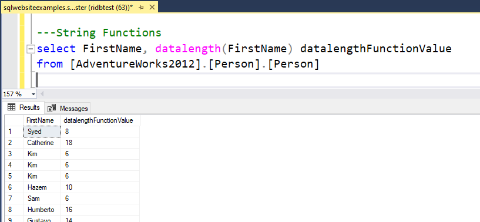

Examples on how we use these Operators
Here are some Screenshots with real time results of how you can use the Operators. If used in correct way , they can help is powerful SQL transformations , data mining , data analysis.
UPPER
LOWER
UNICODE
TRIM
TRANSLATE
SUBSTRING
STUFF
SPACE
SOUNDEX
RIGHT
LEFT
REVERSE
REPLICATE
REPLACE
QUOTENAME
CHAR
CHARINDEX
CONCAT
DATALENGTH
FORMAT
LEN
PATINDEX
ASCII
We will use [AdventureWorks2012].[Person].[Person] table for this Operator
SQL UPPER Function
UPPER function can be used to return all the characters in UPPER CASE values.
We will use [AdventureWorks2012].[Person].[Person] table for this Operator
SQL LOWER Function
LOWER function can be used to return all the characters in LOWER CASE values.
We will use [AdventureWorks2012].[Person].[Person] table for this Operator
SQL UNICODE Function
UNICODE function can be used to return ASCII value of the word.
We will use [AdventureWorks2012].[Person].[Person] table for this Operator
SQL TRIM Function
TRIM function can be used to remove leading , trailing or both strings from a value.
Examples are :
SELECT TRIM( ' test ') AS Result;
SELECT TRIM(LEADING '.,! ' FROM ' .# test .') AS Result;
SELECT TRIM(TRAILING '.,! ' FROM ' .# test .') AS Result;
You can try this in 2017 and further editions.
We will use [AdventureWorks2012].[Person].[Person] table for this Operator
SQL TRANSLATE Function
TRANSLATE function can be used Returns the string provided as a first argument, after some characters specified in the second argument are translated into a destination set of characters, specified in the third argument.
Syntax:
TRANSLATE ( inputString, characters, translations )
Example:
SELECT TRANSLATE('2*[3+4]/{7-2}', '[]{}', '()()');
We will use [AdventureWorks2012].[Person].[Person] table for this Operator
SQL SUBSTRING Function
SUBSTRING function can be used to return only a part of the bigger string or word from a field.
We will use [AdventureWorks2012].[Person].[Person] table for this Operator
SQL STUFF Function
STUFF function can be used literally stuff all the values for similar records into on row. Here of example we stuff all the names of persons based on persontype,
We will use [AdventureWorks2012].[Person].[Person] table for this Operator
SQL SPACE Function
SPACE function can be used add some trailing spaces before , after or in between.
We will use [AdventureWorks2012].[Person].[Person] table for this Operator
SQL SOUNDEX Function
SOUNDEX function can be return the values , based on how they sound when pronounced.
Can be used to evaluate the similarity of two strings.
We will use [AdventureWorks2012].[Person].[Person] table for this Operator
SQL RIGHT Function
RIGHT function can be return the characters staring from the right of given value. We can restrict the number of characters too.
We will use [AdventureWorks2012].[Person].[Person] table for this Operator
SQL LEFT Function
LEFT function can be return the characters staring from the right of given value. We can restrict the number of characters too.
We will use [AdventureWorks2012].[Person].[Person] table for this Operator
SQL REVERSE Function
REVERSE function can be return the characters in reverse order.
We will use [AdventureWorks2012].[Person].[Person] table for this Operator
SQL REPLICATE Function
REPLICATE function can be used to return the characters repeated in addition to the existing value. We can also tell how many times to replicate
We will use [AdventureWorks2012].[Person].[Person] table for this Operator
SQL REPLACE Function
REPLACE function can be used to replace a certain character or characters with something else.

We will use [AdventureWorks2012].[Person].[Person] table for this Operator
SQL QUOTENAME Function
QUOTENAME function can be used to add Quotes to the values..
We will use [AdventureWorks2012].[Person].[Person] table for this Operator
SQL CHAR Function
CHAR function can be used to add certain values like a line break etc based on ASCII value. In this example we add a line break, which can be noticed once we copy the result into SSMS query editer.
We will use [AdventureWorks2012].[Person].[Person] table for this Operator
SQL CHARINDEX Function
CHARINDEX function can be used to get the numeric value or the character , where it is present in the string or value.
We will use [AdventureWorks2012].[Person].[Person] table for this Operator
SQL CONCAT Function
CONCAT function can be used add multiple strings and create a new column with all of them together.
We will use [AdventureWorks2012].[Person].[Person] table for this Operator
SQL DATALENGTH Function
DATALENGTH function can be used return the DATALENGTH of the string value.
We will use [AdventureWorks2012].[Person].[Person] table for this Operator
SQL FORMAT Function
FORMAT function can be used to format the values in certain methods.
For example here we format the date according to USA and BRITISH format.
We will use [AdventureWorks2012].[Person].[Person] table for this Operator
SQL LEN Function
LEN function can be used to get the number of Characters in a string.
We will use [AdventureWorks2012].[Person].[Person] table for this Operator
SQL PATINDEX Function
PATINDEX function can be used to get numeric value of where a certain character is present in a string or words.[First occurence of the character].
We will use [AdventureWorks2012].[Person].[Person] table for this Operator
SQL ASCII Function
ASCII function can be used to get ASCII value of the first character.